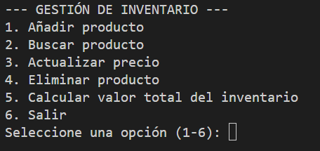
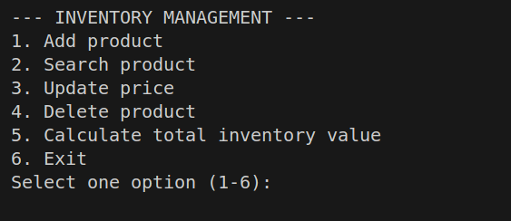

Mis proyectos
Mis proyectos en Python, como sistemas de inventario y validación de datos, reflejan mi capacidad para implementar soluciones robustas usando estructuras de datos y funciones. A continuación, presento los detalles técnicos.
Proyectos Destacados
1. Sistema de Validación de Productos
Descripción: Desarrollo de un sistema en Python que valida la autenticidad y calidad de productos ingresados, verificando datos como código de barras, fecha de caducidad y lote. El sistema alerta sobre productos inválidos o próximos a vencer.
Tecnologías: Python, estructuras de datos (listas, diccionarios), validación con expresiones regulares.

2. Gestor de Calificaciones Interactivo
Descripción: Programa en Python que permite a los usuarios ingresar calificaciones de estudiantes, calcular promedios, estadísticas (mínimo, máximo) y generar reportes en tiempo real. Interfaz intuitiva con menús interactivos.
Tecnologías: Python, funciones personalizadas, manejo de archivos (CSV), bucles y condicionales
3. Gestión de Inventario para Tienda
Descripción: Aplicación en Python para administrar inventarios: agregar, eliminar o buscar productos, actualizar stock y generar reportes. Uso de estructuras de datos para optimizar búsquedas.
Tecnologías: Python, diccionarios, tuplas, funciones con parámetros, persistencia de datos (JSON).
4. Dynamic Store Inventory System (Prueba de Desempeño)
Descripción: Sistema dinámico en inglés que gestiona inventarios con operaciones CRUD (Crear, Leer, Actualizar, Eliminar). Incluye filtros por categorías y alertas de stock bajo.
Tecnologías: Python, POO (opcional si aplica), manejo de errores, módulos externos como prettytable para visualización.
